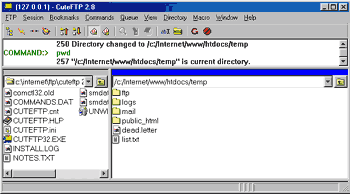

Web Site Replicator v1.0
Created by Lv 'Zetalog' Zheng of eZyScripts.Com
FTP Tutorial - Moving Around Your Server
You should now be connected to your web server. The CuteFTP window consists of four parts. The menus and toolbar located at the
very top of the screen. Just below the toolbar, there is a white box which is where all server messages are displayed. A few messages
should have scrolled by in this box when you connected to your web server.
The rest of the screen is taken up by two windows, each taking up
half of the screen. The left hand side window displays all of the files and directories which are on your computer, and the right hand side window
displays all of the files and directories on your web server. Right now, you should be looking at something similar to this:

To move around in your web server is very easy. If you want to change directories, just double click on the directory
you want to change to. The web server will change to the directory you double clicked on, and display all of the files and
directories inside that directory. If you would like to change directories to one level up from where you are (go back a directory), click on the
button located in the top right
corner of the window.
< Prev |
Next >